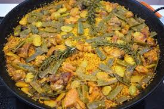

Paella Valenciana
Ingredientes
- 400g de arroz
- Pollo y conejo
- Judía verde y garrofón
- Tomate triturado
- Aceite de oliva
- Caldo de pollo
- Azafrán y sal

Elaboración
- Sofreír la carne y las verduras.
- Añadir el arroz y el tomate, rehogar unos minutos.
- Incorporar el caldo caliente y el azafrán.
- Cocer a fuego medio hasta que se absorba el líquido.
Descargar receta en PDF